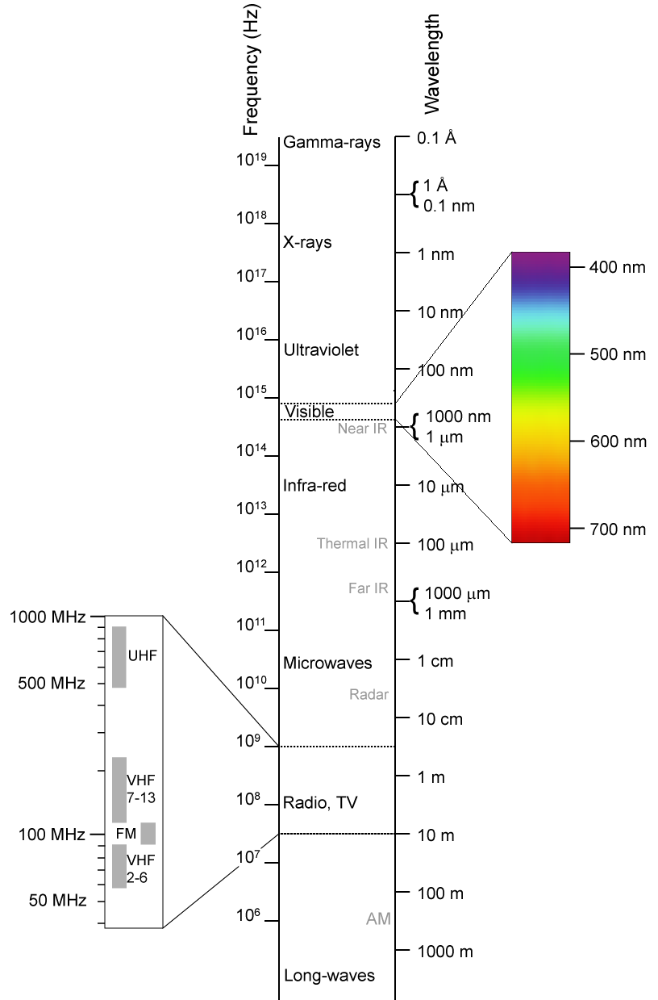
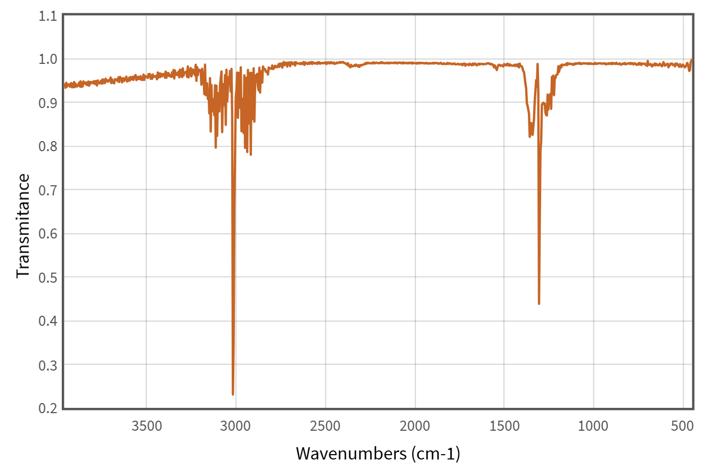

前言

我们在初中就学过，可见光也是电磁波的一种，在这里放一张速查图，来对不同波长进行快速认识：
太阳发射光的光谱是一个跨度非常广的连续光谱，覆盖了从十几纳米的 X 射线/极紫外光，一直到几毫米甚至更长的无线电波，只不过它们的占比有不同。人的视网膜上共有三种视锥细胞，分别负责对短波、中波和长波可见光进行感应。在我们生活中，物体们吸收或反射各种各样波长的电磁波（可见光），被我们视锥细胞感受到，因此我们就能认识到黄色的香蕉，绿色的西瓜，红色的苹果。
有趣的是，许多化学键也有独属于它们的“颜色”，也就是它们能吸收特定波长下的电磁波。但是遗憾的是，我们眼睛的视锥细胞看不到这些物质所有波长下的颜色。但是，我们科学家可以造出仪器来看到任意波长的吸收度。
红外光谱
分光光度计就是量化颜色深浅，对于有色物质有一个符合我们常识的结论：颜色越深，浓度越大。这一常识也就是朗伯-比尔定律对应的现象。但是在这里我们不讨光谱的定量分析，我们来讨论光谱的定性分析：利用红外光谱来鉴定未知物质。
我们在高中就已经学习了焰色反应来判断溶液中金属阳离子（准确来讲叫做焰色现象），焰色反应本身就是一种最原始、最直观的原子发射光谱：电子通过吸收能量又跃迁回基态来放出特定波长光。而对于分子，我们用红外线照它，分子吸收红外光时，电子依然待在原来的分子轨道里，根本没有发生轨道的转移或改变；改变的是原子核相对位置的抖动程度——也就是化学键的伸缩和弯曲，核心是偶极矩变化，其具体请参考大学化学等课本。我们只需要知道的是，不同化学键因为构成原子电负性差异，它们会有在红外谱上的吸收值。

例如这是甲烷的红外吸收光谱：
甲烷是一个高度对称的正四面体分子，在静态下偶极矩为 0。但红外活性的判定依据是“振动过程中偶极矩是否发生变化”，而不是静态偶极矩。因此，图谱上有两个非常尖锐且强烈的吸收峰带，分别是 $\sim 3019\text{ cm}^{-1}$ 处不对称伸缩振动，这是 $\text{C}\left(sp^3\right)-\text{H}$ 键伸缩区；以及 $\sim 1306\text{ cm}^{-1}$ 处不对称弯曲振动，这是变形/剪切振动。
观察上面的光谱图，会发现这两个大峰并不是平滑的，而是由密集交错的细针状小峰组成。这是因为气态的 $\text{CH}_4$ 分子在发生键振动的同时也在自由高速旋转，使得单个能级分裂成了丰富的转动谱线。
地球向宇宙散发热量几乎全部是以红外线的形式发射的，且主要集中在波长 $5 \sim 25 \ \mu\text{m}$ 的红外区间。刚好，甲烷在约 $7.7 \ \mu\text{m}$ 有强吸收峰。甲烷分子吸收地表发射的这部分红外光子后，甲烷分子的 $\text{C}-\text{H}$ 键开始剧烈做不对称弯曲振动，光子的能量转化成了甲烷分子的振动动能。高能的甲烷分子会碰撞周围的其它分子，把这部分动能传给它们，导致整个大气层的温度升高，这就是为什么甲烷是温室气体。
参考视频
关于红外光谱的分子原理，例如峰宽与峰面积在微观振动的解释在这里描述不够直观（或者去翻翻化学书，里面讲的很详细），这个视频做了通俗易懂的讲解：